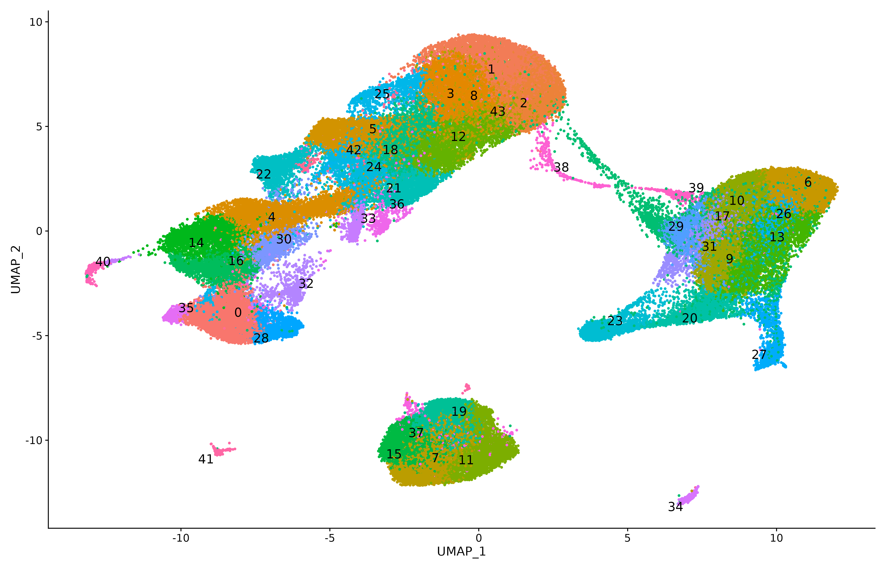
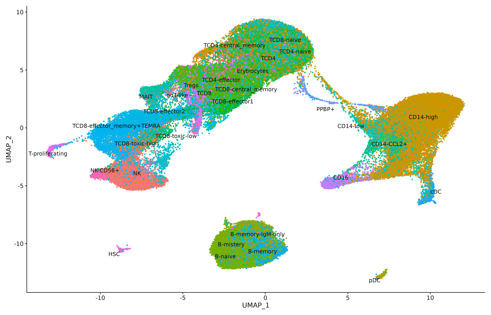
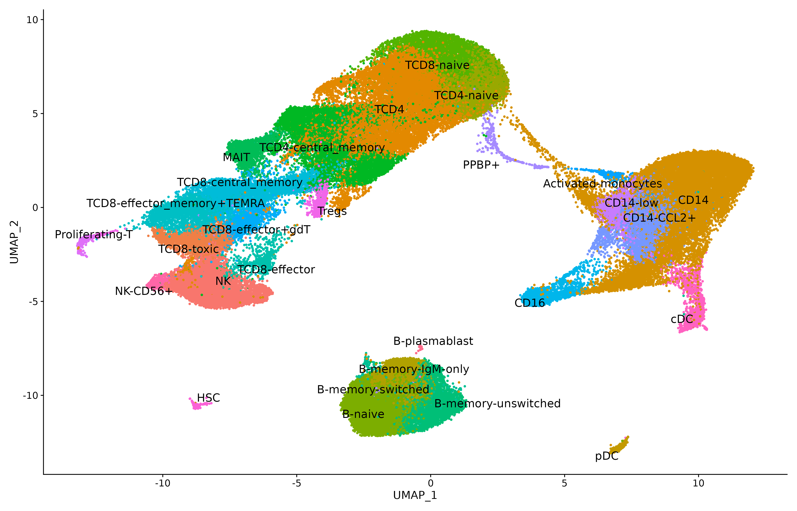
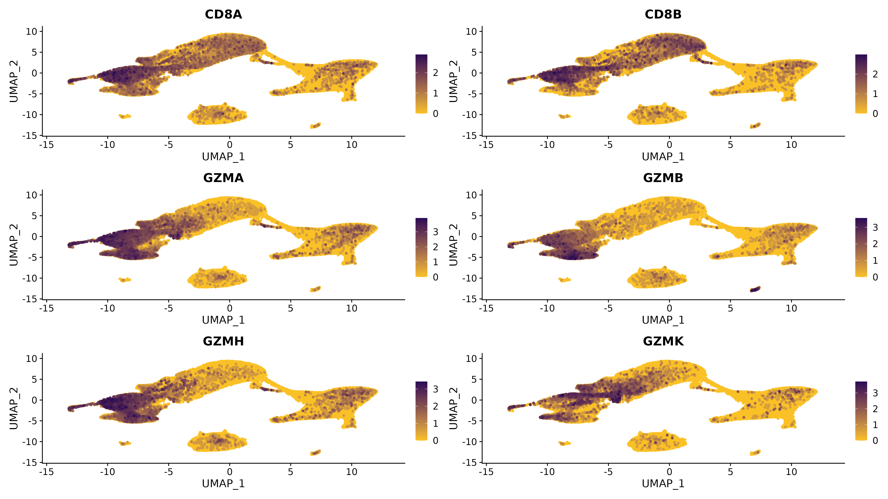
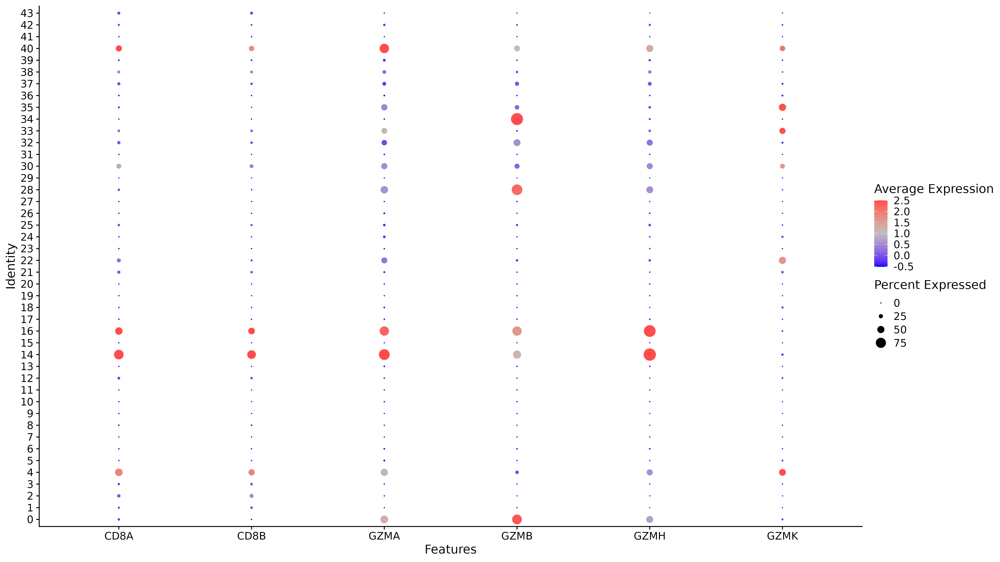
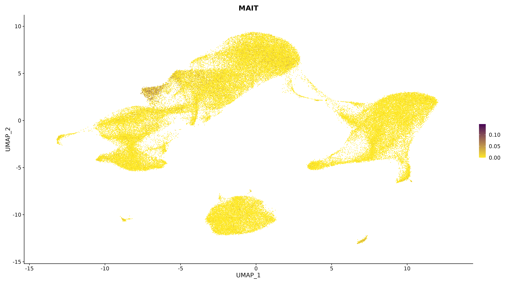
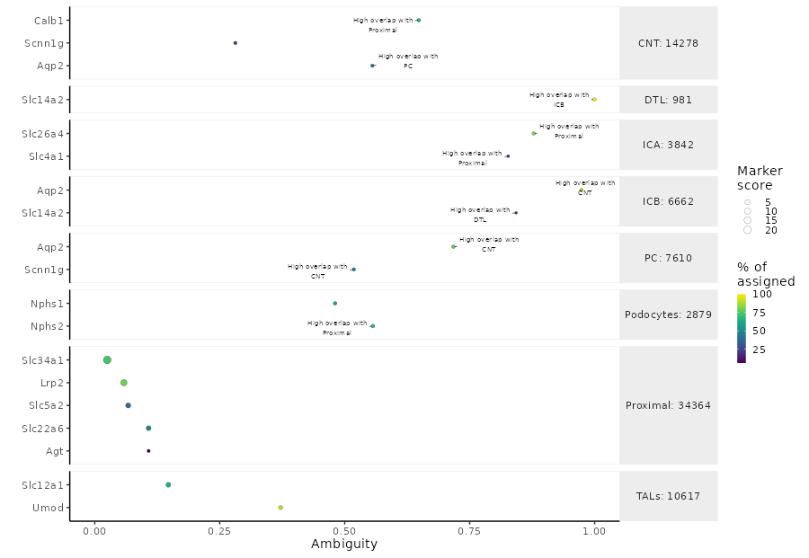

3_annotation.Rmd
library(Seurat)
library(ggplot2)
library(scR)
# load the reference marker datasets
data(ABIS_markers)
data(pbmc_markers_annotated)
data(pbmc_markers)
exp_Integrated <- readRDS("./intX_sct_cca.rds")
DimPlot(exp_Integrated)
reference <- readRDS("/path/to/reference/reference.rds")
DefaultAssay(exp_Integrated) <- "integrated"
DefaultAssay(reference) <- "integrated"
exp_Integrated <- transfer_annotation(reference, exp_Integrated,
"SCT", "cellType_final",
projectUMAP = FALSE, isVerbose = TRUE)
# drop intermediate columns
drop <- grep("prediction.score",names(exp_Integrated@meta.data))
exp_Integrated@meta.data <- exp_Integrated@meta.data[,-drop]
An here is the manually curated annotation

For each cell type defined in the reference marker datasets
scR can plot their expression or a representative
signature.
NOTE: For cluster annotation the use of dotplot is strongly advised, as they are a good method of both qualify and quantify the expression in each cluster.
figDIR <- "./markers_res2.2"
plot_cells_markers(exp_Integrated, figDIR, "integrated_snn_res.2.2", srt_assay = "SCT", overlapPlot=NULL)

figDIR <- "./signatures"
plot_cell_signature(exp_Integrated, figDIR, "integrated_snn_res.2.2", srt_assay = "SCT")
It is also possible to check the ambiguity and overlap of the markers
using monocle3.
NOTE: The conversion Seurat -> Monocle is done on the fly by validate_markers
marker_file_path <- "/path/to/markers_tissue.txt"
markers_check <- validate_markers(exp_Integrated,marker_file_path, "mice")
plot_mark <- plot_markers(markers_check)